premia/premiums
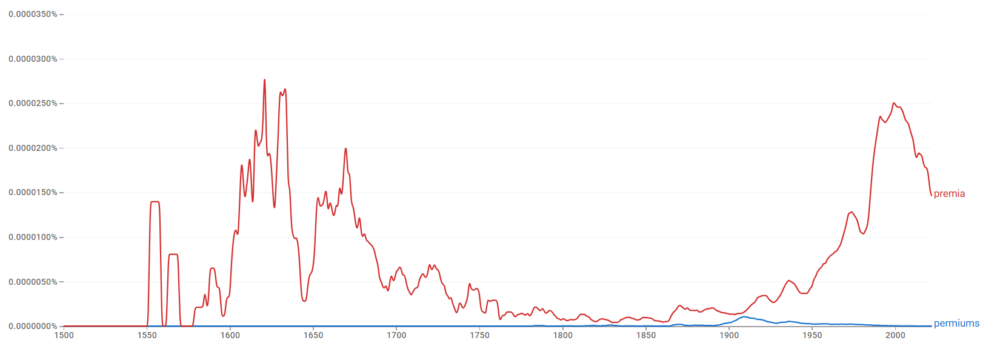
결론
premia와 premiums는 ‘기본 가격·보상에 덧붙는 추가 금액’이라는 동일 의미 영역을 공유하지만 기능이 분화된다. premia는 위험 보상·자산가격·거시금융을 설명하는 추상적·이론적 전문 용어(risk/term/sovereign premia)로 유지되고, premiums는 건강보험·Medicare·책임보험·계약·회계 실무의 구체적 지급 항목으로 기능한다. Ngram상 고전형이 장기적으로 더 강한 존재감을 보이므로, 고전형 우세 → 빠른 수렴 → register 분화의 구조다.
연구 결과
과정 및 결론 도달 과정 · 사용 도구
1차 Ngram 사용량 그래프로 고전형의 장기 우세(현대 금융 담화에서의 재강화 포함)를, 2차 같은 그래프로 규칙형이 실질적으로 대체하지 못한 빠른 수렴 경로를 읽었다. 3차는 Ngram 연어(risk/term/liquidity vs insurance/unearned/renewal)와 COCA 맥락 분석(금융경제학·거시정책 vs 건강보험·계약 실무)으로 레지스터 분화를 해석했다.
세부 정보 · 구간 별 분절
초기에는 규칙형 premiums가 거의 가시적이지 않은 반면, 고전형 premia는 16세기 중반~17세기 후반에 높은 사용량으로 우세하다. premia는 18세기 이후 감소했다가 20세기 중반 이후 다시 상승해 20세기 후반·21세기 초반에 더 뚜렷한 존재감을 보인다. 현재는 규칙형이 아니라 고전형 premia가 뚜렷한 우위를 점한다.
장기 경쟁이 아니라, 초기부터 premia가 중심을 차지했고 사용량 부침이 있었더라도 규칙형이 이를 실질적으로 대체하지 못한 채 고전형이 우세를 유지한 빠른 수렴의 경로다.
premia는 forward/higher/future/risk/term/liquidity/market 및 wage/skill/overtime premia와 결합해 금융경제학의 추상적·계량적 개념과 연결되고, premiums는 unearned/gross/deferred/insurance/net/renewal과 결합해 보험·회계·계약 실무의 지급 항목을 가리킨다. COCA에서 premiums는 건강보험·Medicare·책임보험·계약/회계·노동시장 수당의 실용적 제도어로, premia는 위험 보상·자산가격·국가채무·환율·CDS의 이론적 전문어로 분포한다. 같은 경제 의미 영역에서 고전형=학술·이론, 규칙형=실무·제도로 갈리는 register 분화다.
premia는 라틴어 기반 문어 전통이 강하던 시기에 우세했으나 그 전통이 약해지며 쇠퇴했고, 이후 금융경제학에서 위험·수익 구조를 가리키는 전문 용어로 재부상했다. 반면 premiums는 보험·계약·실무 영역의 표준 형태로 굳어져, 두 형태가 분야에 따라 기능을 분담한다.
참조 이미지 · 연어 그래프와 COCA 용례
이미지를 누르면 크게 볼 수 있어요.
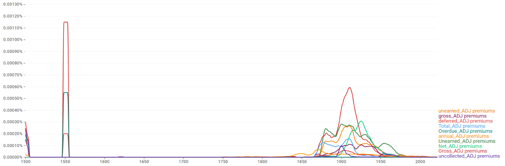
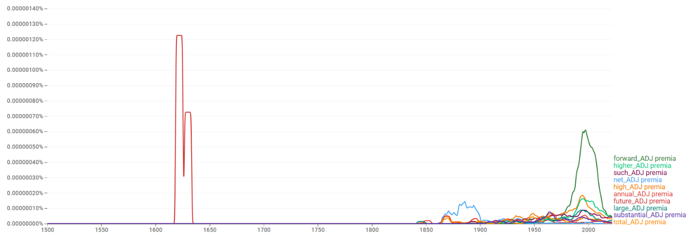
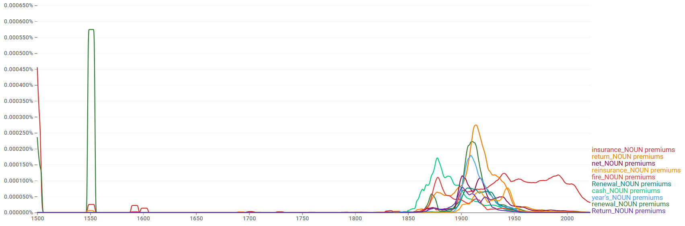
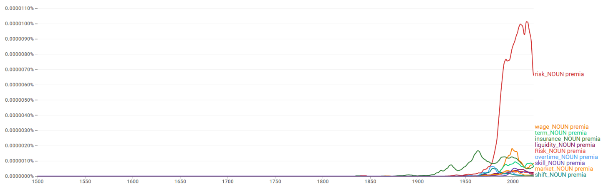
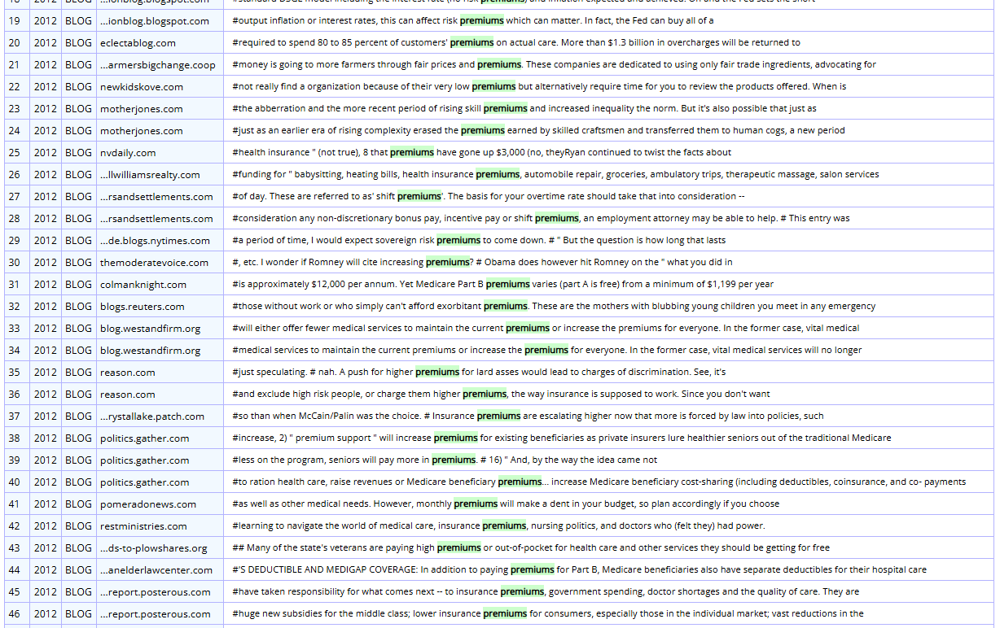
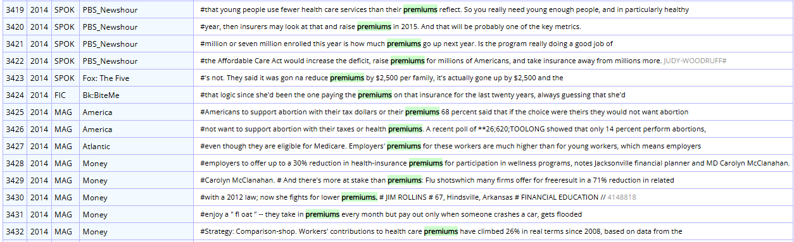
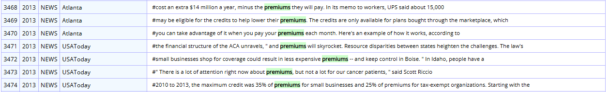
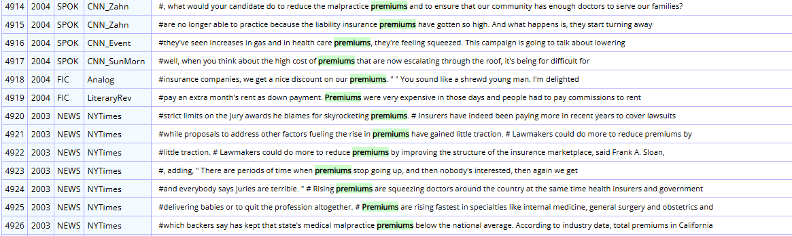
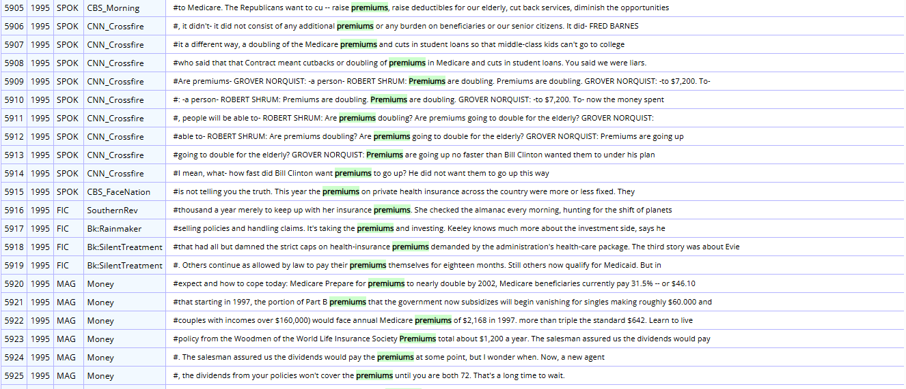
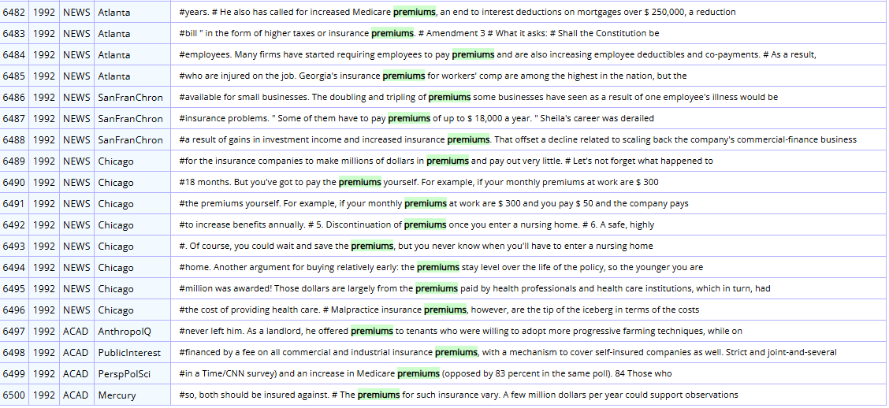
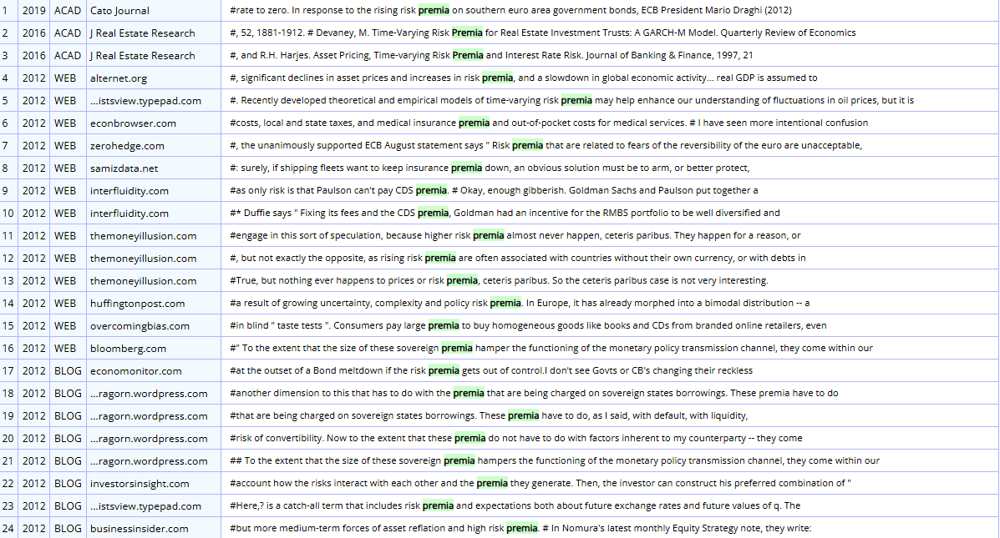
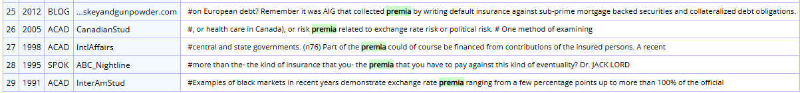